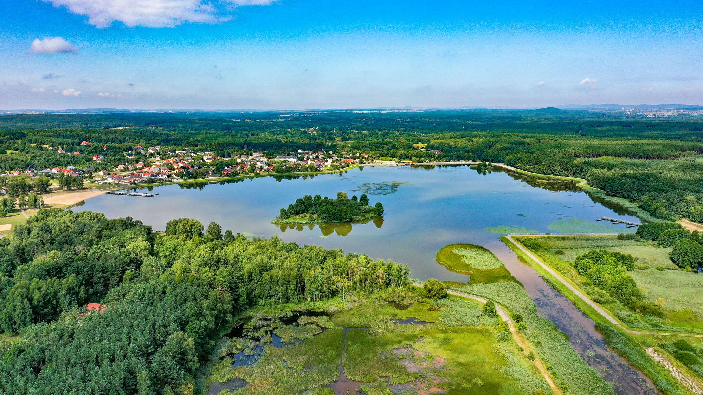

Zalew Wojciechów
5min 
Odkryj magiczny zalew na rzeczce Pierzchniance, oddalony jedynie o krótki spacer przez pola
i łąki, zaledwie 30 minut od Domku. Mimo że nie jest to oficjalne kąpielisko, nic nie stoi
na
przeszkodzie, by korzystać z jego uroków. Obok zalewu znajdują się także stawy z łowiskami,
które przyciągają pasjonatów wędkowania.

Kąpielisko Borków
10 min
Zalew Borków to sporych rozmiarów rozlewisko z uroczą wysepką umiejscowioną na jego środku.
Obiekt posiada zadbaną i dużą plażę z placem zabaw dla dzieci. Oświetlone molo dodaje
wakacyjnego klimatu, a w znajdującej się przy nim wypożyczalni, możemy dostać sprzęt wodny. W
obrębie kąpieliska znajdziemy też obiekty gastronomiczne.

Kąpielisko Andrzejówka
17 min
Zalew strzeżony Andrzejówka w Śladkowie to doskonałe miejsce na całoroczną rekreację. Oferuje
ścieżki dla pieszych i rowerzystów oraz bogatą faunę i florę. Znajdziesz tam pomosty stałe i
pływające, plażę, siłownię zewnętrzną, zadaszoną wiato-kawiarnię, grille, plac zabaw i budynek
sanitarny. To idealne miejsce dla relaksu i aktywności na świeżym powietrzu.

Góry Świętokrzyskie
30min
Świętokrzyski Park Narodowy to miejsce, gdzie góry spotykają się z dziką przyrodą, tworząc
niezapomniany krajobraz sprzyjający odkrywaniu i przygodom. Znajdziesz tu szczyty takie jak
Łysica (612 m n.p.m.) i Łysa Góra (595 m n.p.m.), które zachęcają do wędrówek i podziwiania
piękna natury. Góry Świętokrzyskie są odpowiednie dla każdego, niezależnie od poziomu kondycji,
co sprawia, że są idealne również dla rodzin z dziećmi. Kolejnym argumentem przemawiającym za
odwiedzeniem tych gór, niech będzie fakt, że Łysica jest częścią Korony Gór Polski!

Zamek w Chęcinach
25 min
Odkryj tajemniczy zamek w Chęcinach - średniowieczną twierdzę pełną historii i fascynujących
legend. Ten majestatyczny zamek usytuowany na wzgórzu zaprasza do podróży przez czasy rycerskie
i królewskie. Podziwiaj gotycką architekturę, eksploruj komnaty i mury obronne oraz ciesz się
niesamowitymi widokami na okolicę. To niezapomniane doświadczenie dla miłośników historii i
fanów tajemniczych opowieści.